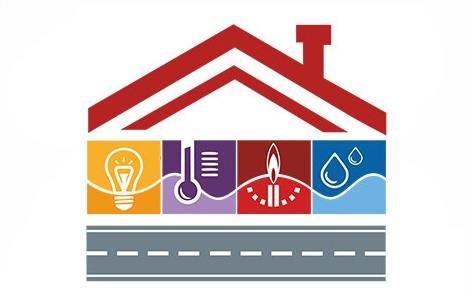
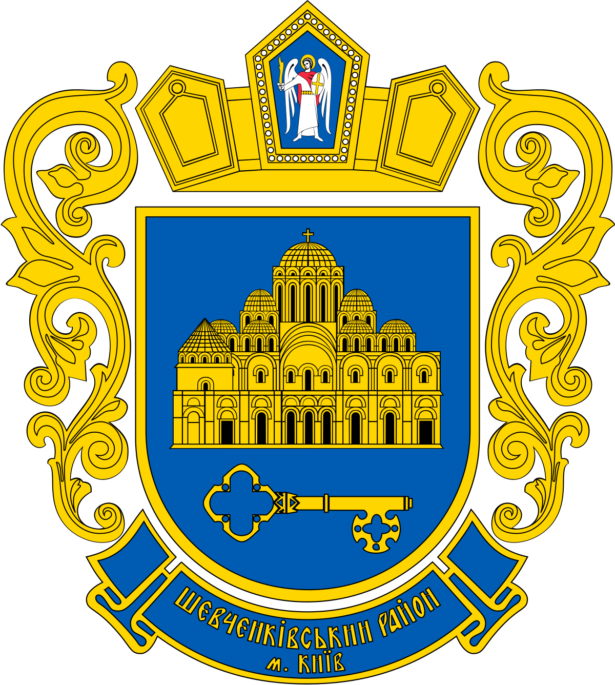
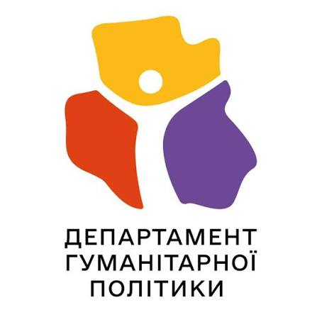
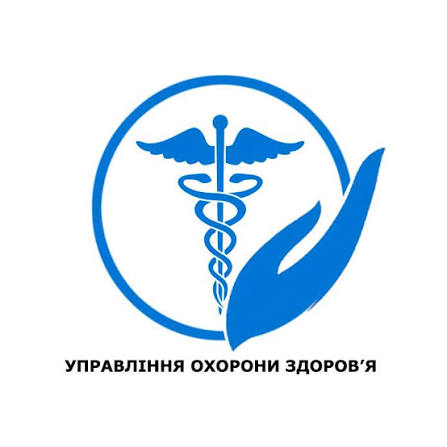

Житлово-комунальне господарство та благоустрій

Обслуговування прибудинкових територій, капітальний ремонт доріг та озеленення скверів.
зв’язок з державними органами влади: Департамент житлово-комунальної інфраструктури КМДА.


Обслуговування прибудинкових територій, капітальний ремонт доріг та озеленення скверів.
зв’язок з державними органами влади: Департамент житлово-комунальної інфраструктури КМДА.
Надання субсидій, допомога пільговим категоріям громадян та внутрішньо переміщеним особам.
зв’язок з державними органами влади: Міністерство соціальної політики України.

Координація роботи закладів дошкільної та загальної середньої освіти району.
зв’язок з державними органами влади: Міністерство освіти і науки України.

Підтримка роботи районних консультативно-діагностичних центрів та амбулаторій.
зв’язок з державними органами влади: Міністерство охорони здоров'я України.
Забезпечення швидкого та якісного оформлення документів для мешканців району.
зв’язок з державними органами влади: Міністерство цифрової трансформації України.